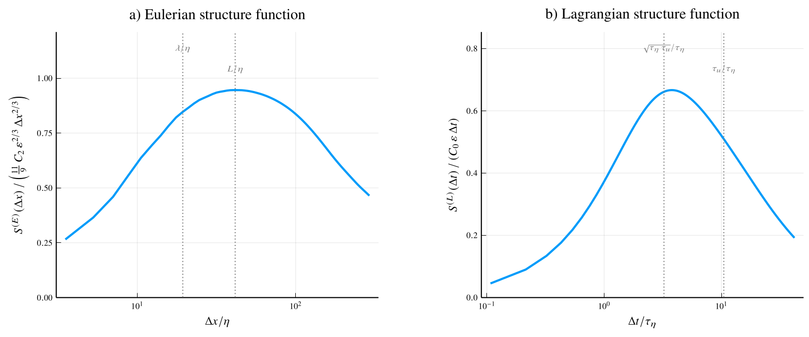
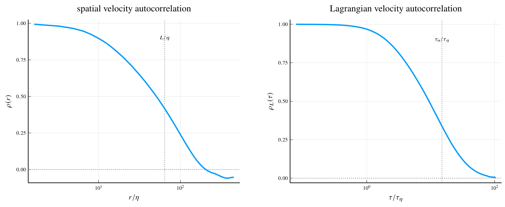
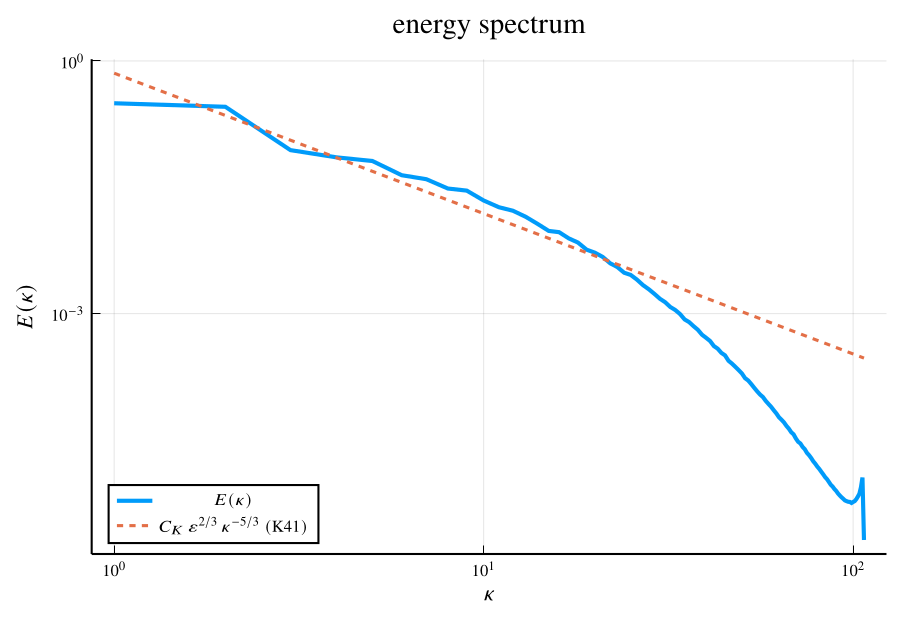
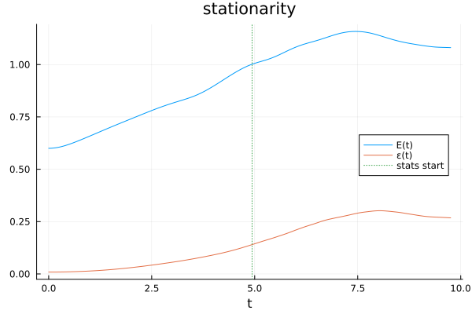

Forced HIT — building a pseudospectral DNS on GBGPeriodicFields
A small, demonstration pseudospectral DNS of forced homogeneous-isotropic turbulence, written the way a real consumer would use GBGPeriodicFields. It plots the Eulerian and Lagrangian second-order velocity structure functions — each compensated by its Kolmogorov (K41) inertial scaling, side by side — alongside the energy spectrum, the stationarity history, and the velocity autocorrelations. The goal is a readable, performance-first end-to-end workflow: the time loop is fully in-place over a preallocated workspace (no per-step allocation) — both how a real DNS is written and what lets the GPU twin run hassle-free (no manual garbage collection).
Method (rotational form). Writing $\hat{\cdot}$ for the spectral (rfft) representation, $u$ for the velocity, $\omega = \nabla\times u$ for the vorticity, $\mathbf{k}$ for the wavenumber vector and $\kappa = \lvert\mathbf{k}\rvert$ for its magnitude, $\nu$ for the kinematic viscosity, and $\mathbb{P}$ for the Leray–Helmholtz projection onto divergence-free fields, the demo advances
\[\frac{\partial \hat{u}}{\partial t} = \mathbb{P} \widehat{u\times\omega} - \nu \kappa^{2} \hat{u} + \hat{f},\]
where $\widehat{u\times\omega}$ is the transform of the Lamb vector (the rotational form of the nonlinearity) and $\hat{f}$ is a deterministic large-scale forcing. The viscous term is integrated exactly through the integrating factor $\exp(-\nu \kappa^{2} \Delta t)$ and the nonlinear term explicitly (RK2); the $2/3$ rule de-aliases the product, and the forcing holds the lowest shells' band energy fixed (statistical stationarity, no tuning). The time loop is the consumer's — the package has no concept of time, by design.
This page is generated from the runnable script HIST_CPU.jl with Literate.jl (it is not executed during the docs build); the figures are from the GPU twin gpu/rocm/HIST_ROCm.jl ($320^{3}$ Float32, $\mathrm{Re}_\lambda \approx 130$ on a 24 GB RX 7900 XTX). The run is split into simulate, dump and plot stages — every plotted curve is written to an HDF5 file, so the figures can be re-styled without re-running the DNS:
julia --project=examples examples/HIST_CPU.jl # full run (default 32³, ~1 min)
julia --project=examples examples/HIST_CPU.jl --smoke # tiny end-to-end check
julia --project=examples examples/HIST_CPU.jl --fast # 64³, nicer statistics
julia --project=examples examples/HIST_CPU.jl --huge # 192³, Re_λ≈93 (heavy)
julia --project=examples examples/HIST_CPU.jl --mega # 256³, Re_λ≈109 (heaviest CPU config; very heavy on CPU)
julia --project=examples examples/plot_hist.jl examples/output/HIST_CPU.h5 # re-plot, no re-runThe analysis, the HDF5 dump, and the plotting live in the shared hist_postprocess.jl; this script stays focused on the package. Let's build it.
using GBGPeriodicFields
using GBGPeriodicFields: field_data, field_grid # raw-array / grid accessors
using Random, Statistics, Printf, LinearAlgebra
import FFTW # for the `MEASURE` planner flag (see the plan setup)
const OUTDIR = joinpath(@__DIR__, "output")
include(joinpath(@__DIR__, "hist_postprocess.jl")) # statistics, HDF5 I/O, plots (shared)Parameters
The options of the run. The smoke() / fast() / huge() / mega() configurations select $32^{3}$ / $64^{3}$ / $192^{3}$ / $256^{3}$.
Base.@kwdef struct Params
N::Int = 32 # grid points per side
L::Float64 = 2π # box size (so wavenumbers are integers)
ν::Float64 = 5.0e-2 # kinematic viscosity (tuned for k_max·η ≳ 1 at 32^3)
k_force::Int = 2 # force shells 1 ≤ |k| ≤ k_force
E_force::Float64 = 0.6 # energy held in the forced band (sets the velocity scale)
cfl::Float64 = 0.5 # advective CFL number
n_spinup::Int = 1500 # steps to reach stationarity (statistics discarded)
n_stats::Int = 2000 # steps over which statistics are collected
n_particles::Int = 2000 # Lagrangian tracers
rec_stride::Int = 3 # record particle velocity every this many stats steps
snap_stride::Int = 100 # take an Eulerian SF snapshot every this many stats steps
seed::Int = 42
endA tiny configuration for a quick end-to-end check (--smoke).
smoke() = Params(n_spinup = 15, n_stats = 40, n_particles = 300, rec_stride = 1, snap_stride = 10)A larger, still-quick configuration for nicer statistics (--fast) — $64^{3}$, more tracers.
fast() = Params(N = 64, n_spinup = 400, n_stats = 800, n_particles = 4000, rec_stride = 2, snap_stride = 40)A high-Reynolds configuration (--huge) — $192^{3}$ at a lower viscosity, so the Reynolds number ($\mathrm{Re}_\lambda \approx 93$) and the scale separation $\lambda \ll L$, $\tau_\eta \ll \tau_u$ are large enough to read off the plots; the grid resolves it ($\kappa_{\max}\eta \approx 1.13$). At fixed forcing $\mathrm{Re}_\lambda$ is set by $\nu$, not the grid, so $192^{3}$ already gives the separation; it is also a comfortable fit on a 12 GB GPU. The CFL is conservative (0.3) because the statistics-window $\Delta t$ is frozen (for a uniform Lagrangian axis): over a long averaging window a CFL-tight, marginally-resolved run can hit a velocity peak the frozen $\Delta t$ cannot handle and blow up. The n_spinup steps clear the initial energy overshoot; n_stats time-averages over a few of the forcing's energy-oscillation periods (the band-rescaling forcing makes $k(t)$ oscillate about its mean rather than settle flat). Heavy: minutes on a GPU, much longer on the CPU.
huge() = Params(N = 192, ν = 3.2e-3, cfl = 0.3, n_spinup = 3300, n_stats = 4700, n_particles = 8000,
rec_stride = 4, snap_stride = 60)The largest CPU-practical configuration (--mega) — $256^{3}$ at $\nu = 2.5\times10^{-3}$, $\mathrm{Re}_\lambda \approx 109$ with $\kappa_{\max}\eta \approx 1.3$ (comfortably resolved — a lower $\nu$ would raise $\mathrm{Re}_\lambda$ but drop $\kappa_{\max}\eta$ below $1.1$, where the marginally-resolved flow blows up over a long run). Same recipe as --huge, one grid level up. On the CPU it is reproducible but very heavy — hours of wall-clock and $\gtrsim$ 12 GB of RAM (Float64 doubles the GPU twin's footprint). The documented figures go one level further still — the GPU twin's --giant at $320^{3}$ ($\mathrm{Re}_\lambda \approx 130$), which a 24 GB card's headroom unlocks; $256^{3}$ was the ceiling of the 12 GB card this scheme was first characterized on.
mega() = Params(N = 256, ν = 2.5e-3, cfl = 0.3, n_spinup = 4500, n_stats = 4500, n_particles = 8000,
rec_stride = 4, snap_stride = 100)Spectral utilities and the preallocated workspace
The diagonal-in-Fourier operators — de-aliasing, the integrating factor $\exp(-\nu \kappa^{2}\Delta t)$, the IC envelope — are applied with the package's convolve (periodic convolution = a coefficientwise multiply by a transfer function $\hat{g}$). The de-alias filter is the package's spectral_cutoff; the physics kernels (carrying $\nu$, $\Delta t$, the envelope width) are consumer-built ScalarFieldSpectrals applied with the same convolve. The $\lvert\mathbf{k}\rvert^{2}$ they need is the package's squared_wavenumber_field.
make_workspace preallocates every scratch field the time loop needs, so a step allocates nothing — this is the heart of the performance-first design (and what keeps the GPU pool flat).
Wrap a per-mode transfer function $w(\mathbf{k})$ (a real $(N_{k_x}, N_y, N_z)$ array, the argument w) as a scalar field in spectral representation — the consumer's half of a convolution; the package applies it via convolve. The integrating factor and the IC envelope are built this way (their $\nu$ / $\Delta t$ / width are the consumer's — the package carries no physics).
spectral_kernel(reference, w) = ScalarFieldSpectral(ComplexF64.(w), field_grid(reference))Preallocated scratch fields for the in-place hot loop, so a step allocates nothing (this is how a real DNS is written — performance first). Holds the integrating factor Ek, the RK stages and the velocity/vorticity work fields; the loop and step! write into these instead of allocating.
function make_workspace(grid, layout, p)
spectral_vector() = VectorFieldSpectral(zeros(ComplexF64, spectral_field_shape(grid, layout, Val(1))), grid)
physical_vector() = VectorFieldPhysical(zeros(p.N, p.N, p.N, 3), grid)
return (ωh = spectral_vector(), k1 = spectral_vector(), k2 = spectral_vector(),
ustar = spectral_vector(), uhc = spectral_vector(), tmp = spectral_vector(),
Nt = spectral_vector(), # (u×ω)^ scratch (distinct helmholtz source)
Ek = ScalarFieldSpectral(zeros(ComplexF64, spectral_field_shape(grid, layout, Val(0))), grid),
u = physical_vector(), ω0 = physical_vector(), ω = physical_vector(),
uω = physical_vector(), uxω = physical_vector())
endDiagnostics
Kinetic energy, dissipation and the energy spectrum are all package reductions: inner(f,g) $\equiv \langle f\cdot g\rangle$ and radial_spectrum(uh, m) the shell-resolved inner, so the shell sum recovers it — $\sum_\kappa E(\kappa) = \tfrac{1}{2}\langle\lvert u\rvert^{2}\rangle = k$, the turbulent kinetic energy. No field_data loops. The CFL speed uses maximum(abs, field_data(u)) — an allocation-free reduction; lpnorm(u, Inf) would be the true $\sup\lvert u\rvert$ but materializes a magnitude field, so we avoid it in the hot loop.
kinetic_energy(u) = 0.5 * inner(u, u) # ½⟨|u|²⟩ (Reductions.inner)
dissipation(ω, p) = p.ν * inner(ω, ω) # ν⟨|ω|²⟩ (homogeneous)CFL speed: $\max_i \lvert u_i\rvert$, the largest velocity component in absolute value — an allocation-free reduction over the raw array. (lpnorm(u, Inf) is the true $\sup\lvert u\rvert$ but materializes a magnitude field every call — avoided so the hot loop allocates nothing; the max component differs from the magnitude by at most $\sqrt{3}$, well inside the CFL margin.)
max_speed(u) = maximum(abs, field_data(u))$E(\kappa) = \tfrac{1}{2} \times$ the shell-resolved Parseval inner; $\sum_\kappa E(\kappa) = \tfrac{1}{2}\langle\lvert u\rvert^{2}\rangle = k$, the kinetic energy.
function energy_spectrum(uh, m)
shells, spectrum = radial_spectrum(uh, m) # (|k| bins, Σ_{shell} |û|²) (package)
return shells, 0.5 .* spectrum # E(κ): physics ½ stays consumer-side
endForcing
Hold the kinetic energy in the shells from $\lvert\mathbf{k}\rvert = 1$ up to k_force at E_force, built entirely from package ops: band is a spectral_band mask kernel; the band energy is $\tfrac{1}{2}\langle\lvert u_{\mathrm{band}}\rvert^{2}\rangle$, computed as 0.5 * inner(ws.tmp, ws.tmp) (Parseval; the same-argument inner(f, f) is allocation-free); rescaling the in-band modes is one more convolve (scaling preserves $\nabla\cdot u = 0$). Applying convolve! into the scratch ws.tmp keeps it allocation-free, no scalar indexing.
function force!(uh, band, ws, p)
convolve!(ws.tmp, uh, band) # band-pass copy into scratch (no allocation)
band_kinetic = 0.5 * inner(ws.tmp, ws.tmp) # ½⟨|u_band|²⟩ = ½ inner(u_band,u_band): f===f ⇒ allocation-free
band_kinetic < 1e-12 && return uh # guard (IC seeds the band)
scale = sqrt(p.E_force / band_kinetic)
convolve!(uh, uh, band, scale - 1, 1) # rescale in-band modes: one convolve (α/β, alloc-free)
return uh
endRight-hand side and time integration — in place
The heart of the performance-first design: no per-step allocation. The work fields all live in the preallocated ws; the package's in-place operators write into them (curl!, to_physical!, cross!, to_spectral!, helmholtz_projection!, convolve!), and the linear combinations are in-place broadcasts on the raw arrays. Nothing here allocates, so there is no GC / reclaim pressure — which is exactly what lets the GPU twin run unattended (an allocating style would grow the device memory pool every step until it wedges).
Physical velocity & vorticity of a spectral field, into the given buffers. The uh buffer is preserved by transforming a COPY of it — to_physical! may overwrite its spectral source as scratch.
function to_velocity_vorticity!(u_out, ω_out, uh, ws, m, plans)
curl!(ws.ωh, uh, m) # ω̂ = ∇×û (û preserved)
to_physical!(ω_out, ws.ωh, plans) # physical vorticity (consumes ω̂)
copyto!(field_data(ws.uhc), field_data(uh)) # keep û: transform a scratch copy
to_physical!(u_out, ws.uhc, plans) # physical velocity (consumes the copy)
return u_out, ω_out
end$\hat{N}$ (the buffer Nh) = de-aliased Leray projection of $\widehat{u\times\omega}$, from physical $u$, $\omega$.
function rhs!(Nh, u, ω, ws, m, plans, dealias)
cross!(ws.uxω, u, ω) # u × ω (physical)
to_spectral!(ws.Nt, ws.uxω, plans) # (u×ω)^ into scratch
helmholtz_projection!(Nh, ws.Nt, m) # Leray projection — DISTINCT dest ⇒ no-alias path (no allocation)
convolve!(Nh, Nh, dealias) # 2/3 de-alias (coefficientwise multiply)
return Nh
endOne integrating-factor RK2 (Heun) step, fully in place. The integrating factor $\mathcal{E} = \exp(-\nu \kappa^{2}\Delta t)$ (the buffer ws.Ek; $\nu$, $\Delta t$ are physics the package never sees) is applied with convolve!. Assumes ws.u, ws.ω0 already hold the START-of-step physical velocity & vorticity (the loop fills them, and also uses them for the diagnostics), so the first stage reuses them — no recomputation. With $\hat{N}$ the de-aliased projected nonlinearity (the buffers ws.k1, ws.k2 hold $\hat{N}_1$, $\hat{N}_2$):
\[\begin{aligned} \hat{N}_1 &= \hat{N}(\hat{u}_n), & \hat{u}^{*} &= \mathcal{E} (\hat{u}_n + \Delta t \hat{N}_1), \\ \hat{N}_2 &= \hat{N}(\hat{u}^{*}), & \hat{u}_{n+1} &= \mathcal{E} \hat{u}_n + \tfrac{\Delta t}{2} (\mathcal{E} \hat{N}_1 + \hat{N}_2), \end{aligned}\]
then force.
function step!(uh, ws, m, plans, dealias, band, ksq, p, dt)
field_data(ws.Ek) .= complex.(exp.(-p.ν .* ksq .* dt)) # E = exp(−νk²Δt) into scratch
rhs!(ws.k1, ws.u, ws.ω0, ws, m, plans, dealias) # k₁ = N̂(ûₙ) (cached start-of-step u, ω)
field_data(ws.ustar) .= field_data(uh) .+ dt .* field_data(ws.k1)
convolve!(ws.ustar, ws.ustar, ws.Ek) # û* = E·(ûₙ + Δt·k₁)
to_velocity_vorticity!(ws.uω, ws.ω, ws.ustar, ws, m, plans) # û*'s velocity & vorticity (scratch)
rhs!(ws.k2, ws.uω, ws.ω, ws, m, plans, dealias) # k₂ = N̂(û*)
convolve!(ws.k1, ws.k1, ws.Ek) # E·k₁
convolve!(uh, uh, ws.Ek) # E·ûₙ
field_data(uh) .+= (dt / 2) .* (field_data(ws.k1) .+ field_data(ws.k2)) # ûₙ₊₁
force!(uh, band, ws, p)
return uh
endParticles
RK2 in space on the frozen start-of-step velocity field (the $O(\Delta t^{2})$ field-staleness is fine for a demo), using the package's interpolate (gather). Positions wrap into $[0, L)$; the per-tracer velocity is recorded for the Lagrangian statistics.
function advect!(X, u, dt, p)
v1 = point_values(interpolate(u, PointSet(X))) # CatmullRom gather (package)
Xmid = mod.(X .+ dt .* v1, p.L)
v2 = point_values(interpolate(u, PointSet(Xmid)))
X .= mod.(X .+ (dt / 2) .* (v1 .+ v2), p.L)
return v1
endInitial condition
A random field, concentrated at large scales by an envelope, projected solenoidal, then band-energy normalized. (The package deliberately ships no random-field generator; the example builds its own.)
function random_solenoidal(grid, m, plans, ws, ksq, band, p; kp = 2.0)
rng = MersenneTwister(p.seed)
uh = to_spectral(VectorFieldPhysical(randn(rng, p.N, p.N, p.N, 3), grid), plans)
envelope = spectral_kernel(uh, exp.(-(ksq ./ kp^2))) # concentrate at large scales
convolve!(uh, uh, envelope) # apply it (alias-safe, coefficientwise)
helmholtz_projection!(uh, uh, m) # make solenoidal (alias-guarded)
force!(uh, band, ws, p) # set the forced-band energy
return uh
endStatistics
The Lagrangian per-component structure function (lagrangian_stats), the Lagrangian velocity autocorrelation, and the integral-scale reduction (integral_scale) live in the shared hist_postprocess.jl. The Eulerian integral length comes from the package's radial_correlation (in the driver below); the Lagrangian integral time from lagrangian_stats.
The driver
Setup, spin-up to stationarity, then the statistics window — advancing the field in place, advecting the tracers, and accumulating the diagnostics — then dump everything to HDF5 and plot.
function run_hist(p::Params)
isdir(OUTDIR) || mkpath(OUTDIR)
@printf("HIST_CPU: N=%d ν=%.3g forcing |k|≤%d @ E=%.2g (%d spinup + %d stats steps)\n",
p.N, p.ν, p.k_force, p.E_force, p.n_spinup, p.n_stats)
@printf(" threads: Julia=%d (package CPU threading %s — launch with `-tN` to use more cores)\n",
Threads.nthreads(), Threads.nthreads() > 1 ? "ON" : "off")Setup: the grid, transform plans, spectral multipliers, the de-alias filter and forcing band, and the preallocated workspace.
grid = Grid3D((p.N, p.N, p.N), (p.L, p.L, p.L))
layout = RealFourierLayout()
uphys0 = VectorFieldPhysical(zeros(p.N, p.N, p.N, 3), grid)
uspec0 = VectorFieldSpectral(zeros(ComplexF64, spectral_field_shape(grid, layout, Val(1))), grid)Plan the transforms with FFTW's MEASURE planner instead of the default ESTIMATE: over a long run the one-time planning cost amortizes, and on some CPUs ESTIMATE badly mis-plans the single-precision transforms (up to $\sim\!5\times$ slower at $256^{3}$). MEASURE overwrites its input arrays while planning, so we plan on the zero-filled uphys0 / uspec0 scaffolds before seeding the initial condition below.
vplans = FieldTransformPlans(uphys0, uspec0; fft_flags = FFTW.MEASURE) # vector physical ↔ spectral
splans = FieldTransformPlans(ScalarFieldPhysical(zeros(p.N, p.N, p.N), grid),
ScalarFieldSpectral(zeros(ComplexF64, spectral_field_shape(grid, layout, Val(0))), grid);
fft_flags = FFTW.MEASURE)
m = FieldSpectralMultipliers(uspec0)
ksq = real.(field_data(squared_wavenumber_field(uspec0, m))) # |k|² (package), for the consumer symbols2/3-rule de-alias filter and the forcing band, both as package shell-mask kernels.
dealias = spectral_cutoff(uspec0, m, (2 / 3) * (p.N / 2) * (2π / p.L))
band = spectral_band(uspec0, m, 0.5 * (2π / p.L), (p.k_force + 0.5) * (2π / p.L))
ws = make_workspace(grid, layout, p) # preallocated scratch (a step allocates nothing)
Δx = p.L / p.NInitial condition, then de-alias it.
uh = random_solenoidal(grid, m, vplans, ws, ksq, band, p)
convolve!(uh, uh, dealias)Spin-up to stationarity (adaptive $\Delta t$; these statistics are discarded). Each step fills the cached start-of-step velocity/vorticity (to_velocity_vorticity!), records $k(t)$ and $\varepsilon(t)$, then advances uh.
t_hist = Float64[]; E_hist = Float64[]; ε_hist = Float64[]
t = 0.0
sim_start = time() # wall-clock of the simulation (the time loops)
for n in 1:p.n_spinup
to_velocity_vorticity!(ws.u, ws.ω0, uh, ws, m, vplans) # start-of-step velocity & vorticity
dt = p.cfl * Δx / max(max_speed(ws.u), 1e-6)
push!(t_hist, t); push!(E_hist, kinetic_energy(ws.u)); push!(ε_hist, dissipation(ws.ω0, p))
step!(uh, ws, m, vplans, dealias, band, ksq, p, dt)
t += dt
endFreeze $\Delta t$ for the statistics window so the Lagrangian $\tau$-axis is uniform.
to_velocity_vorticity!(ws.u, ws.ω0, uh, ws, m, vplans)
dt = p.cfl * Δx / max(max_speed(ws.u), 1e-6)Statistics window ($\Delta t$ frozen so the Lagrangian $\tau$-axis is uniform): advance the field, advect the tracers on the start-of-step velocity, record their velocities, and accumulate the autocorrelation.
X = p.L .* rand(MersenneTwister(p.seed + 1), p.n_particles, 3) # seed tracers
n_rec = p.n_stats ÷ p.rec_stride
V = zeros(p.n_particles, 3, n_rec) # recorded velocities
Cacc = Float64[]; sep = Float64[]; n_snap = 0 # time-averaged velocity autocorrelation C(r)
rec = 0
for n in 1:p.n_stats
to_velocity_vorticity!(ws.u, ws.ω0, uh, ws, m, vplans) # start-of-step velocity & vorticity
push!(t_hist, t); push!(E_hist, kinetic_energy(ws.u)); push!(ε_hist, dissipation(ws.ω0, p))
step!(uh, ws, m, vplans, dealias, band, ksq, p, dt) # advances ûₙ (reuses ws.u, ws.ω0 for k₁)
v = advect!(X, ws.u, dt, p) # advect on the start-of-step velocity
if n % p.rec_stride == 0 && rec < n_rec
rec += 1
V[:, :, rec] .= v
end
if n % p.snap_stride == 0
# Eulerian statistics from the FFT velocity autocorrelation C(r) (package, shell-averaged): the
# per-component S⁽ᴱ⁾(r) = (2/3)(C(0)−C(r)) and the integral length L = ∫ρ follow from it — no hand-rolled
# spatial shift. Accumulate C over snapshots for a time average.
s, Csnap = radial_correlation(uh, vplans)
isempty(Cacc) ? (sep = s; Cacc = copy(Csnap)) : (Cacc .+= Csnap)
n_snap += 1
end
t += dt
end
if n_snap == 0 # ensure ≥1 sample (if snap_stride > n_stats)
sep, Cacc = radial_correlation(uh, vplans); n_snap = 1
end
C = Cacc ./ n_snap # time-averaged autocorrelation
sim_seconds = time() - sim_start # full simulation wall-clock (spin-up + statistics)Final diagnostics: the energetics, the Kolmogorov/Taylor scales, the divergence check, the spectrum.
u = to_physical(uh, vplans)
K = kinetic_energy(u)
ε = dissipation(to_physical(curl(uh, m), vplans), p)
uprime = sqrt(2K / 3)
Reλ = sqrt(15 * uprime^4 / (p.ν * ε))
η = (p.ν^3 / ε)^(1 / 4) # Kolmogorov length
τ_η = sqrt(p.ν / ε) # Kolmogorov time
λ = uprime * sqrt(15 * p.ν / ε) # Taylor microscale (length), λ = u'√(15ν/ε)
kmaxη = (2 / 3) * (p.N / 2) * ηdivergence check (should be ~roundoff): $\lVert\nabla\cdot u\rVert / (\kappa_{\mathrm{rms}} \lVert u\rVert)$, via the package l2norm.
divp = to_physical(divergence(uh, m), splans)
divrel = l2norm(divp) / (sqrt(mean(ksq)) * l2norm(u) + 1e-30)
ek_k, ek_E = energy_spectrum(uh, m)Length / time scales from the velocity autocorrelations. Eulerian: the time-averaged $C(r) = \langle u(x)\cdot u(x+r)\rangle$ (with $C(0) = \langle\lvert u\rvert^{2}\rangle$) gives the integral length $L = \int_0^\infty \rho(r)\,\mathrm{d}r$ and the per-component structure function $S^{(E)}(r) = \tfrac{2}{3} (C(0) - C(r))$. Lagrangian: the particle-velocity autocorrelation $R(\tau)$ (from the recorded V), integral time $\tau_u = \int_0^\infty \rho_L(\tau)\,\mathrm{d}\tau$.
rho_E = C ./ C[1]
L_int = integral_scale(sep, C)
S2_E = (2 / 3) .* (C[1] .- C) # Eulerian per-component structure function (homogeneous identity)
τ_l, R_l, S2l = lagrangian_stats(V, p.rec_stride * dt)
rho_L = R_l ./ R_l[1]
τ_u = integral_scale(τ_l, R_l)
@printf(" K=%.4g ε=%.4g u'=%.4g Re_λ=%.1f η=%.3g k_max·η=%.2f ‖∇·u‖_rel=%.1e\n",
K, ε, uprime, Reλ, η, kmaxη, divrel)
@printf(" simulation: %.1f s wall-clock for %d steps at %d³ (%.1f ms/step)\n",
sim_seconds, p.n_spinup + p.n_stats, p.N, 1e3 * sim_seconds / (p.n_spinup + p.n_stats))
@printf(" scales: λ/η=%.2f L/η=%.2f | τ_u/τ_η=%.2f √(τ_η·τ_u)/τ_η=%.2f\n",
λ / η, L_int / η, τ_u / τ_η, sqrt(τ_η * τ_u) / τ_η)Parseval: the package's spectral inner (rfft half-spectrum weighting) reproduces the physical $\tfrac{1}{2}\langle\lvert u\rvert^{2}\rangle$ exactly — same energy, computed in spectral representation.
@printf(" ½⟨|u|²⟩: physical=%.6g spectral inner(û,û)=%.6g | Σ E(k)=%.4g (Parseval)\n",
K, 0.5 * inner(uh, uh), sum(ek_E))
@assert isfinite(K) && isfinite(ε) && divrel < 1e-6 "non-finite or non-solenoidal state"Dump every plotted curve to HDF5, then plot (re-plot later via plot_hist.jl, no re-run).
bundle = Dict{String, Any}(
"backend" => "CPU", "eltype" => "Float64",
"N" => p.N, "L_box" => p.L, "nu" => p.ν, "dt" => dt, "n_spinup" => p.n_spinup,
"K" => K, "epsilon" => ε, "uprime" => uprime, "Re_lambda" => Reλ,
"eta" => η, "tau_eta" => τ_η, "lambda" => λ, "L_int" => L_int, "tau_u" => τ_u,
"kmax_eta" => kmaxη, "div_rel" => divrel, "C2" => 2.1, "C0" => 6.0, "CK" => 1.6, "sim_seconds" => sim_seconds,
"t" => t_hist, "E" => E_hist, "eps_t" => ε_hist,
"ek_k" => collect(ek_k), "ek_E" => collect(ek_E),
"r" => sep[2:end], "S2_E" => S2_E[2:end], # structure-function panel (excludes r = 0)
"tau" => τ_l, "S2_L" => S2l, "rho_L" => rho_L,
"sep" => collect(sep), "rho_E" => rho_E, # autocorrelation panel (includes r = 0)
)
save_hist(joinpath(OUTDIR, "HIST_CPU.h5"), bundle)
make_hist_plots(bundle; outdir = OUTDIR, prefix = "HIST_CPU")
return nothing
endEntry point
Select a configuration from the command line, and run.
function main()
p = ("--smoke" in ARGS) ? smoke() :
("--fast" in ARGS) ? fast() :
("--huge" in ARGS) ? huge() :
("--mega" in ARGS) ? mega() : Params()
run_hist(p)
end
main()Results
The figures below are from the GPU twin ($320^{3}$ Float32, $\mathrm{Re}_\lambda \approx 130$ on a 24 GB RX 7900 XTX, time-averaged over several forcing-oscillation periods). The headline is the pair of compensated structure functions: the per-component second-order velocity structure functions (one third of the trace $\langle\lvert\delta u\rvert^{2}\rangle$), Eulerian and Lagrangian, each normalized by its Kolmogorov (K41) inertial scaling — a true inertial range shows as a plateau at $1$. With $\langle\cdot\rangle$ the average (over space/time origins), $u$ the Eulerian velocity and $U$ a tracer's velocity,
\[S^{(E)}(\Delta x) = \tfrac{1}{3}\bigl\langle \lvert u(x+\Delta x) - u(x)\rvert^{2}\bigr\rangle = \tfrac{2}{3}\bigl(C(0) - C(r)\bigr), \qquad S^{(L)}(\Delta t) = \tfrac{1}{3}\bigl\langle \lvert U(t+\Delta t) - U(t)\rvert^{2}\bigr\rangle = \tfrac{2}{3}\bigl(R(0) - R(\Delta t)\bigr),\]
where $r = \lvert\Delta x\rvert$, $C(r) = \langle u(x)\cdot u(x+r)\rangle$ is the spatial velocity autocorrelation — read straight off the package's radial_correlation (the shell-averaged $C(r)$) — and $R(\tau) = \langle U(t)\cdot U(t+\tau)\rangle$ is the Lagrangian one (over tracers and time origins). The plotted curves are the K41-normalized ratios
\[\frac{S^{(E)}(\Delta x)}{\tfrac{11}{9} C_2 \varepsilon^{2/3} \Delta x^{2/3}} \quad\text{vs}\quad \frac{\Delta x}{\eta}, \qquad\qquad \frac{S^{(L)}(\Delta t)}{C_0 \varepsilon \Delta t} \quad\text{vs}\quad \frac{\Delta t}{\tau_\eta},\]
with $\varepsilon$ the mean dissipation rate, $\eta$ the Kolmogorov length, $\tau_\eta = \sqrt{\nu/\varepsilon}$ the Kolmogorov time, and $C_2 \approx 2.1$, $C_0 \approx 6$ the (adjustable, plot-time) Kolmogorov constants. The Taylor microscale $\lambda$ and the integral scales are marked: the integral length $L = \int_0^\infty \rho(r)\,\mathrm{d}r$ and time $\tau_u = \int_0^\infty \rho_L(\tau)\,\mathrm{d}\tau$ are the areas under the normalized autocorrelations $\rho = C/C(0)$ and $\rho_L = R/R(0)$ (taken to the first zero crossing).

The velocity autocorrelations, from which the integral scales are read off:

The energy spectrum $E(\kappa)$, compared against the K41 inertial-range form $E(\kappa) = C_K \varepsilon^{2/3} \kappa^{-5/3}$ with $C_K \approx 1.6$ the Kolmogorov constant. The prefactor $C_K \varepsilon^{2/3}$ is not cosmetic: $E(\kappa)$ has the dimensions of energy per unit wavenumber and $\kappa^{-5/3}$ does not, so the guide must carry $C_K \varepsilon^{2/3}$ (with the measured $\varepsilon$) to be the full K41 prediction rather than a slope. Alongside it, the turbulent kinetic energy $k(t)$ and the dissipation $\varepsilon(t)$: the band-rescaling forcing makes the energy oscillate slowly about its mean rather than settle flat, so the statistics are time-averaged over several oscillation periods (the autocorrelation accumulates over all snapshots) to keep the means representative.


On the GPU
The device twin gpu/rocm/HIST_ROCm.jl runs this identical solver on ROCArrays (Float32, allowscalar(false)). Because the time loop is in-place and the package's spectral operators are allocation-free, it needs no manual garbage collection — the device memory pool stays flat and it sustains $\approx 96$ ms/step at $320^{3}$ on a 24 GB RX 7900 XTX (peak $\approx 13$ GB; the card reaches $384^{3}$ at its $\approx 21$ GB ceiling). That hassle-free GPU behaviour is the whole point of writing the solver preallocated and in-place.
This page was generated using Literate.jl.